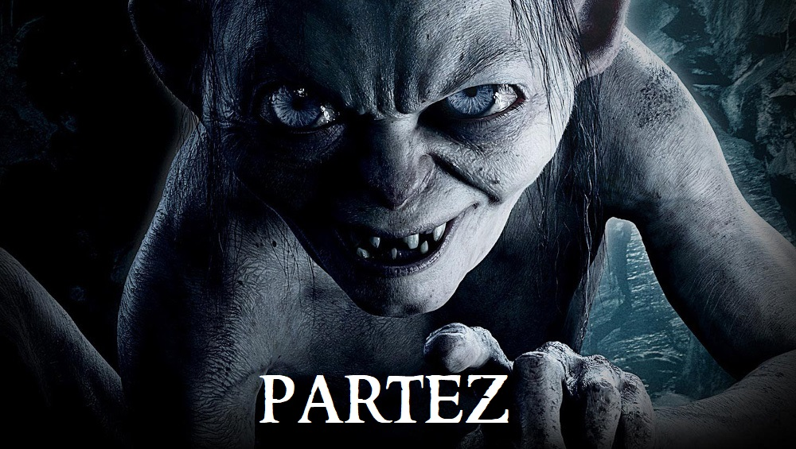

Passez la souris sur les éléments pour découvrir l'Histoire de l'Anneau.
Vous entrez dans la caverne de Gollum...
Argh... GOLLUM !!! Qu'est-ce qu'un humain vient faire chez GOLLUM ?!
Oh ! L'humain veut entendre l'Histoire de l'Anneau. Grr.. Très bien.
Gollum vous récite un poème...
« Trois anneaux pour les rois Elfes sous le ciel,
Sept pour les Seigneurs Nains dans leurs demeures de pierre,
Neuf pour les Hommes Mortels destinés au trépas,
Un pour le Seigneur Ténébreux sur son sombre trône,
Dans le Pays de Mordor où s'étendent les Ombres.
Un anneau pour les gouverner tous. Un anneau pour les trouver,
Un anneau pour les amener tous et dans les ténèbres les lier
Au Pays de Mordor où s'étendent les Ombres. »
Gollum vous toise et semble nerveux...
Telle est la légende de l'Anneau unique... Mon précieux...
Vous apercevez un objet scintillant au fond de la caverne.
L'humain est-il satisfait ? Alors il doit PARTIR ! Mon précieux est A MOI !!
Faites le bon choix...
- Prendre la fuite.
- 